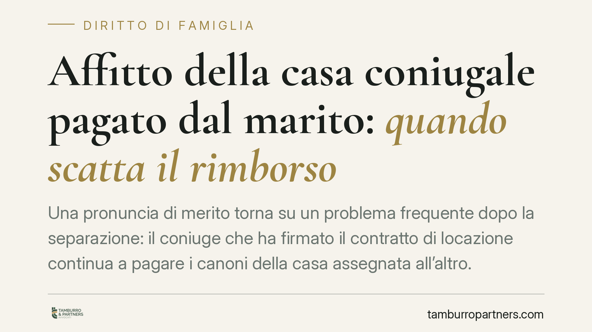

Affitto della casa coniugale pagato dal marito: quando scatta il rimborso
Una pronuncia di merito torna su un problema frequente dopo la separazione: il coniuge che ha firmato il contratto di locazione continua a pagare i canoni della casa assegnata all'altro. Può recuperare quanto versato? La risposta impone di distinguere il rapporto verso il locatore da quello interno tra i coniugi, e di capire come si calcola la quota rimborsabile.

Il caso
Marito e moglie firmano insieme il contratto di locazione della casa familiare. Dopo la separazione, l'abitazione viene assegnata alla moglie, ma il canone continua a essere pagato dal marito, anch'egli conduttore e quindi obbligato verso il proprietario.
A distanza di tempo, il marito chiede alla moglie il rimborso di quanto versato. Una pronuncia di merito ha riconosciuto il diritto al recupero, distinguendo con chiarezza due piani che nella pratica vengono spesso confusi.
> Avvertenza. Si tratta di una decisione di primo grado, non di un orientamento consolidato della Corte di Cassazione. Il valore è quindi orientativo: casi analoghi possono essere decisi diversamente. Prima di ogni citazione puntuale è opportuno verificare estremi e attualità della pronuncia.
Inquadramento normativo
Quando due o più persone si obbligano insieme verso un unico creditore per la stessa prestazione, si ha solidarietà passiva: il locatore può pretendere l'intero canone da ciascun conduttore, indifferentemente (art. 1294 c.c.). Questo è il rapporto esterno, che riguarda il proprietario dell'immobile.
Altra cosa è il rapporto interno tra i coobbligati. Chi ha pagato più della propria parte può agire in regresso verso gli altri per la quota di rispettiva spettanza: lo prevede l'art. 1299 c.c. È qui che si colloca la richiesta di rimborso tra i coniugi.
La misura della quota si determina applicando l'art. 1298 c.c.: nei rapporti interni l'obbligazione si divide per parti uguali, salvo che risulti diversamente. La parità è quindi una presunzione, non una regola assoluta: può essere superata da un accordo diverso o da elementi concreti che spostino il peso dell'onere.
Il nodo: assegnazione e godimento esclusivo
L'elemento che nel diritto di famiglia altera l'equilibrio è l'assegnazione della casa. Il provvedimento del giudice attribuisce a un solo coniuge il godimento esclusivo dell'immobile, di norma nell'interesse dei figli.
Da qui la logica seguita dalla pronuncia: se un coniuge gode in via esclusiva del bene, è ragionevole che il corrispondente onere economico – il canone – gravi su di lui. Chi non abita più nell'immobile e continua a pagare sta anticipando una spesa che, nel rapporto interno, non gli compete più.
È questa la ragione per cui la presunzione di parità dell'art. 1298 c.c. può essere ribaltata: il godimento esclusivo diventa il criterio che sposta il peso dell'affitto sul solo assegnatario. Non si tratta di un automatismo, ma di una valutazione che tiene conto del titolo di godimento e degli eventuali accordi tra le parti.
Implicazioni pratiche
Per il coniuge non assegnatario che resta cointestatario del contratto la situazione è delicata. Verso il locatore rimane pienamente obbligato: non può sottrarsi al pagamento invocando la separazione, pena azioni di recupero e possibile risoluzione del contratto per morosità.
Allo stesso tempo, ciò che paga oltre la propria quota interna non è definitivamente perduto: può essere oggetto di rimborso. Il rischio concreto è di lasciar accumulare i pagamenti senza tracciarli e senza formalizzare la richiesta, indebolendo la prova del credito.
Per il coniuge assegnatario, specularmente, il godimento esclusivo comporta l'assunzione dell'onere corrispondente: continuare a beneficiare dell'abitazione senza contribuire può generare un debito verso l'altro.
Cosa fare in concreto
- Verificare la propria posizione contrattuale: controllare se si è ancora conduttore firmatario del contratto e, quindi, obbligato verso il locatore.
- Continuare a onorare il canone verso il proprietario finché si è coobbligati: la solidarietà esterna non viene meno con la separazione.
- Conservare le prove dei pagamenti: bonifici, ricevute, estratti conto. La quantificazione del rimborso dipende dalla documentazione.
- Formalizzare per iscritto la richiesta di rimborso al coniuge assegnatario, indicando periodi e importi, per interrompere la prescrizione e datare il credito.
- Valutare una modifica contrattuale (recesso, voltura o subentro) per ridefinire la titolarità del contratto ed evitare l'accumulo di anticipazioni.
Conclusione
La distinzione tra piano esterno e piano interno è la chiave di lettura. Verso il locatore vale la solidarietà; tra i coniugi vale il regresso, calibrato sulla quota interna e sul godimento effettivo del bene. È opportuno affrontare la questione con documentazione ordinata e richieste tempestive, senza attendere che gli importi diventino difficili da ricostruire.
---
*Contributo informativo a cura di Tamburro & Partners – Avv. Giuseppe Tamburro. Non costituisce parere legale.*
Ogni famiglia ha il suo equilibrio.
Separazione, divorzio, affidamento, assegno: se vuoi un confronto riservato su una specifica situazione, scrivi allo studio. Ti rispondiamo entro un giorno lavorativo.